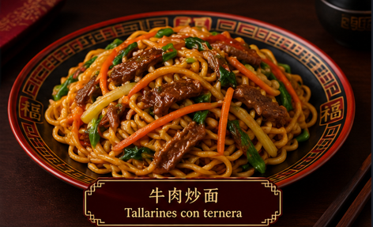

Ingredientes
- 300 g de tallarines chinos o noodles
- 300 g de ternera, cortada en tiras finas
- 1/2 pimiento verde
- 1/2 cebolla
- 100 g de pak choi o col china
- 3 cucharadas de salsa de soja
- 1 cucharada de salsa de ostras (opcional)
- 1 diente de ajo picado
- 1 cucharadita de aceite de sésamo
- 2 cucharadas de aceite vegetal
- Pimienta al gusto

Elaboración
- Cuece los tallarines siguiendo las instrucciones del paquete. Escúrrelos y resérvalos.
- Calienta el aceite en un wok a fuego alto.
- Añade la ternera, el ajo y una pizca de pimienta. Saltea durante 2–3 minutos, hasta que esté dorada. Retira y reserva.
- En el mismo wok, saltea la cebolla, la zanahoria, el pimiento y el pak choi durante 3–4 minutos.
- Vuelve a incorporar la ternera y añade los tallarines.
- Agrega la salsa de soja y, si quieres, la salsa de ostras. Remueve bien para repartir la salsa.
- Saltea todo durante 2–3 minutos a fuego alto.
- Añade el aceite de sésamo justo al final, mezcla y sirve caliente.
Descarga nuestra receta aquí